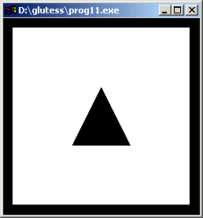

urce source source source source source source source source source source |
[program eleven] All opengl implementations are distributed with the gl utility library, or glu as its more commonly known. We've used some glu functions before - namely glu spheres, there are however many more functions in the glu library. This program shows you how to set up glu's tessellator for creating non planar and convex polygons. The screenshot below shows such a polygon.

Firstly we declare an unsigned integer - this will hold display list that draws our shape, once the tessellator has generated it.
GLuint list[1];
The 'make_shape' function will setup the tessellator, the display lists and generate the triangle data ready for use. Line 4 creates a local pointer to a
GLUtriangulatorObj (don't worry too much about that). Line 6 declares a 2 dimensional array that holds the outside contour of shape we want to render, as you can probably tell this is a square. Line 7 is the inside contour of our shape, a triangle.[1] void make_shape ( void )
[2] {
[3]
[4] GLUtriangulatorObj *tess;
[5]
[6] GLdouble outside [4][3] = { {
-0.9, -0.9, 0.0 },
{ 0.9, -0.9, 0.0 },
{ 0.9, 0.9, 0.0 },
{ -0.9, 0.9, 0.0 } };
[7] GLdouble inside [3][3] = { {
0.0, 0.3, 0.0 },
{ 0.3, -0.3, 0.0 },
{ -0.3, -0.3, 0.0 } };
Lines 8 and 9 generate new display lists and new tessellator objects in our
list and tess pointer variables.[8] list[0] = glGenLists ( 1 );
[9] tess = gluNewTess ( );
Don't Panic! The following three lines look pretty hellish (in actual fact, they are pretty hellish). They are assigning the opengl functions that we need to use to tessellate our object. Naming them in this way means the tessellator knows what format the vertices are stored in when you pass them to it. In our case, line 11 tells the tessellator that all vertex data we pass to it should be processed by the
glVertex3dv function.The dodgy looking casting is required because both glBegin and glVertex3dv normally require arguments, we don't want to pass any to them here - so the casting is necessary. Please don't ask me to explain the need for doubly voiding them - I freely admit I don't fully understand what's happening here. Gotta love C, eh?
Line 13 doesn't need the fancy (and probably 'dangerous') casting because glEnd doesn't take any arguments.
A final word on this casting; I have only tested this source on Borland's compiler. Your compiler might need to cast these functions in a different way. If you give me feedback I'll update the article to reflect changes for different compilers.
[10] gluTessCallback ( tess,
GLU_BEGIN, ( void ( __stdcall *) ( void ))glBegin );
[11] gluTessCallback ( tess, GLU_VERTEX, (
void ( __stdcall *) ( void ))glVertex3dv );
[12]
[13] gluTessCallback ( tess, GLU_END, glEnd
);
Line 14 tells opengl that everything we do from hereon in will be compiled into a display list, pointed to by the identifier list[0].
[14] glNewList ( list[0], GL_COMPILE );
Line 15 tells the tessellator to begin a new 'complex' polygon. We've passed out pointer 'tess' to it. Line 16 controls the for loop that will iterate through the vertices of our 'outside' array. Line 17 gives the appropriate coordinates as vertices for the tessellator. Note that we use
gluTessVertex much like we would use glVertexnnLine 19 sets the tessellator to draw 'inside' our polygon.
[15] gluBeginPolygon ( tess
);
[16] for ( int i = 0; i < 4; i++ )
[17] gluTessVertex (
tess, outside[i], outside[i] );
[18]
[19] gluNextContour ( tess, GLU_INTERIOR );
In line 20, as before we use a for loop to iterate through our arrays of vertex data. This time we are sending the data for the inside of our shape (a triangle if you recall). As above,
gluTessVertex is called to pass the data to the tessellator.Line 23 informs the tessellator that we've finished drawing our special polygon, line 25 ends the display list and finally in line 27 we delete the tessellator object.
[20] for ( int i = 0; i < 3; i++ )
[21] gluTessVertex ( tess, inside[i],
inside[i] );
[22]
[23] gluEndPolygon ( tess );
[24]
[25] glEndList ( );
[26]
[27] gluDeleteTess ( tess );
[28]
}
If you've read the previous examples, you'll be able to figure out the rest of the source. To see how glu has tessellated the polygon try switching the view to wireframe.
Website and content, Paul Groves